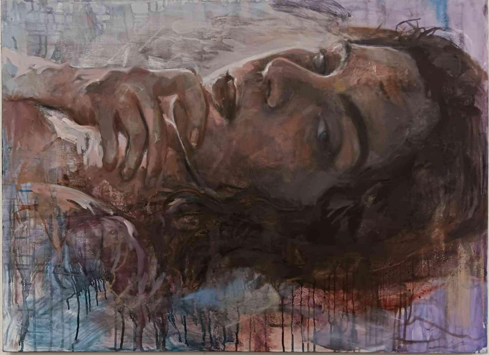
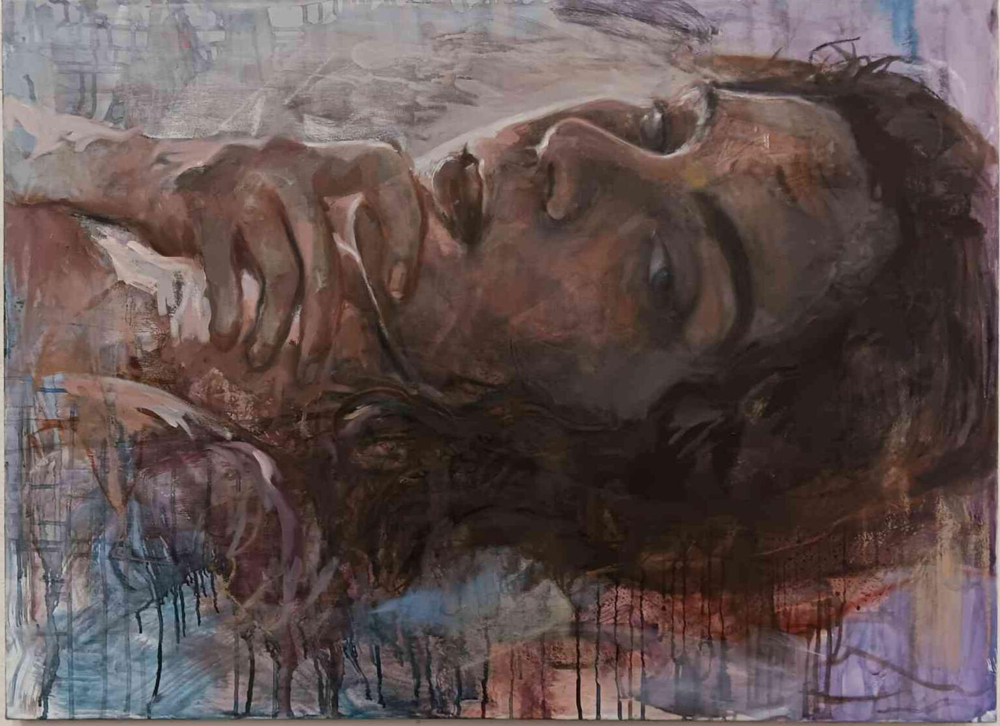

About
Student artist based in Baltimore, Maryland. "The passage of time is a destructive act" forms the basis of an exploration into how actions lost in routine are rediscovered and immortalized through the act of self portraiture. I paint moments from daily routine in sequence, then dissolve, destroy, or cover layers of paint to emulate the wear of time, indelible markings form the body as ghost images along a timeline. The remnants explore the relationship between transparent forms and opaque lines as symbols of time, importance, and repetition.
 
